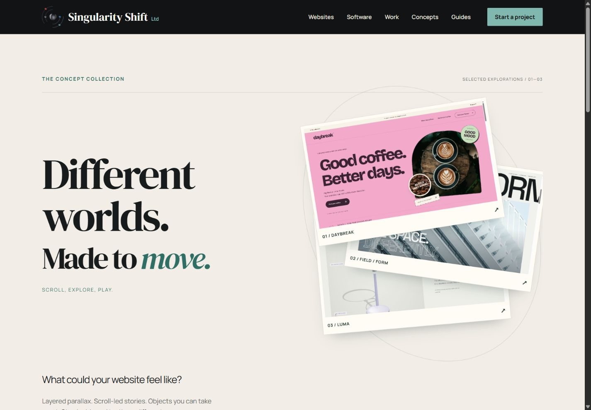

An animated website should let people understand the offer and complete their task at a pace they can control. That means planning the experience for visitors who enjoy movement, people who need less of it and those navigating without a mouse.
The brief needs to describe what remains available when movement changes or stops. This makes accessibility part of the design and acceptance process from the beginning. For a Cheltenham business commissioning a distinctive site, it also gives you concrete questions to ask when reviewing a demonstration.

See the idea in action
The concept collection
Compare three different website experiences and see the design decisions in action.
Original concepts for fictional brands, created by Singularity Shift.
Make a short inventory of movement
List the effects you are considering and what starts each one. An automatically playing background, a scene tied to scrolling and a transition after selecting a product behave differently.
For each effect, record:
- The information or purpose it supports.
- Whether it begins automatically or follows an intentional action.
- Whether it continues while the visitor tries to read something else.
- The control available to stop, skip or change it.
- How the same information appears without the movement.
Include details such as moving headings, rotating products, image comparisons, loading indicators and carousels. Small animations can still create a distracting overall experience when several run at once.
Design the reduced-motion version explicitly
Browsers can detect a device preference for less non-essential motion through prefers-reduced-motion. That preference needs an intentional response in the site's styles and scripts. It does not automatically redesign a page. MDN: prefers-reduced-motion.
Ask for a quieter layout that keeps the same useful content. An expanding photograph could become a still image. A stack of moving project sheets could become a normal sequence. A product selector can continue to change the selected item without a sweeping transition.
Review this version alongside the animated design. Simply hiding the moving section may remove the only explanation of a service. Making an animation extremely brief may leave a sudden jump that does not suit the purpose either.
Ask the developer to check what happens if the preference changes while the page is already open. Existing motion should respond appropriately, and the visitor should keep a usable page.
Distinguish interaction effects from continuous movement
W3C's Animation from Interactions, Success Criterion 2.3.3 at Level AAA, addresses disabling non-essential motion triggered by interaction. Its explanation specifically includes additional motion associated with scrolling, such as parallax. Ordinary movement of the document as someone scrolls is treated differently. W3C: Animation from Interactions.
Automatically moving content needs separate consideration. Pause, Stop, Hide, Success Criterion 2.2.2 at Level A, covers moving, blinking or scrolling information that starts automatically, lasts more than five seconds and appears alongside other content. It calls for a way to pause, stop or hide that movement unless it is essential to the activity. Automatically updating information has related requirements without the five-second exception. W3C: Pause, Stop, Hide.
These distinctions help a developer assess each feature properly. A reduced-motion setting should be considered together with appropriate controls for the page's particular behaviour.
Keep the controls usable without dragging
A comparison effect can invite someone to drag a divider while also providing a labelled range control. Project choices can be ordinary buttons with an identifiable selected state. People should be able to operate the functionality using a keyboard where it does not inherently depend on a freehand path. W3C: Keyboard.
During review, move through the page with the keyboard. Check that focus remains visible, that controls have meaningful names and that selecting an item provides understandable feedback. Watch for controls that become covered by a pinned scene or are visually moved away from their expected position.
If a project opens in a dialog, include opening, closing and returning to the page in the review. Confirm that the visitor can resume where they left off. A polished entrance animation is only one part of that interaction.
Use a real example to make the requirements tangible
The interactive concept collection offers working material to discuss. In FIELD / FORM, the animated opening and layered photographic sequence have static reduced-motion presentations. The project choices and colour-to-monochrome comparison remain useful controls.
The architecture studio and briefs are fictional, and its photographs are credited references. The comparison shows two treatments of one image. It demonstrates an interaction pattern without implying a completed building transformation.
Use examples like this to describe the behaviour you want. Their existence does not establish that a different website, or every part of a concept, meets a particular accessibility standard.
Exclude flashing effects from the creative direction
Make avoiding flashes and strobing part of the brief. Flashing raises a separate concern from the discomfort or distraction caused by other movement. W3C's Three Flashes or Below Threshold guidance explains the relevant criterion and its thresholds.
A motion preference is not a substitute for assessing flashing content. This matters when reviewing rapid video cuts, high-contrast transitions and promotional effects as well as code-driven animation.
Agree what the review will cover
Request a review of ordinary customer tasks with full motion and reduced motion, keyboard navigation, a phone layout and longer real content. Include the journey from a direct link to a lower section, rather than testing only a carefully paced trip from the homepage.
Record the browsers and devices checked, problems found and any areas still awaiting review. Automated checks and a visual demonstration provide partial evidence; broader accessibility needs a wider assessment.
For website design in Cheltenham, tell James which interactions you are considering. We can turn the creative direction into concrete behaviour, alternatives and review criteria before it becomes difficult to change.